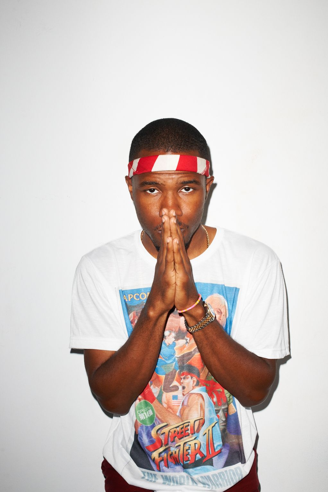
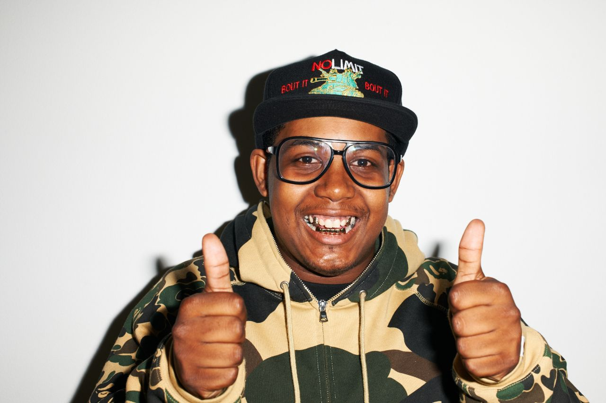
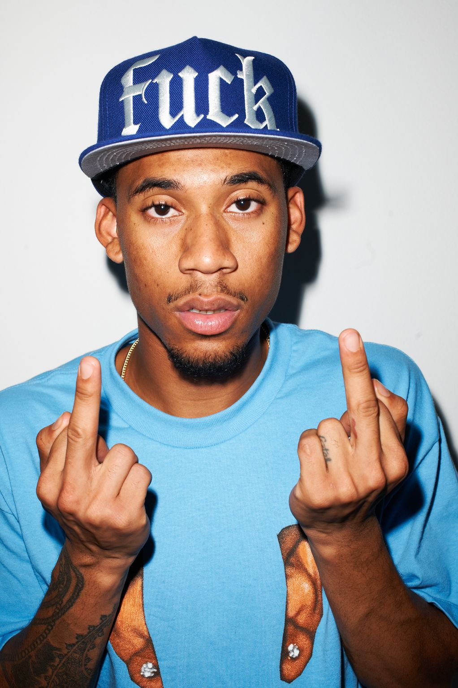
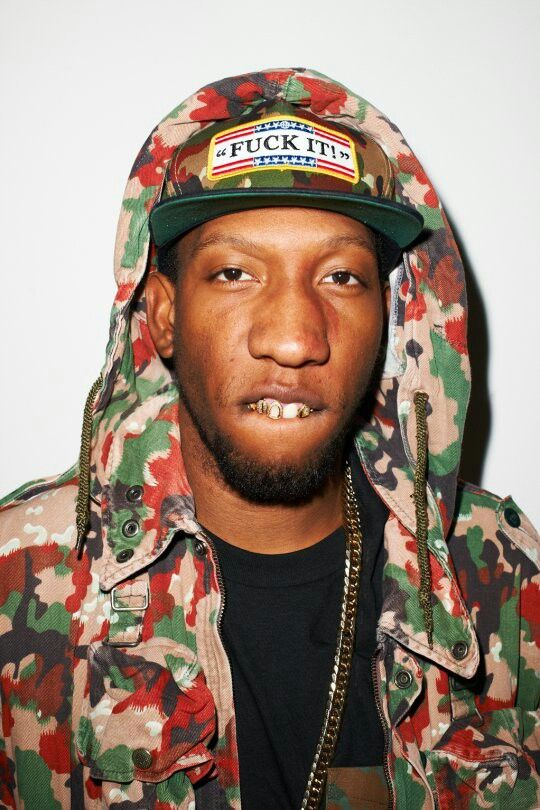
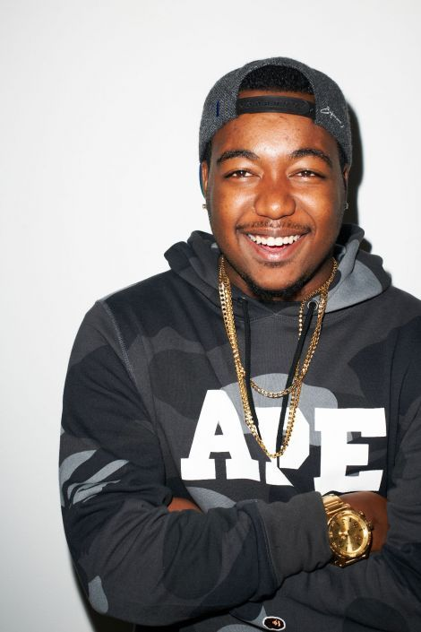
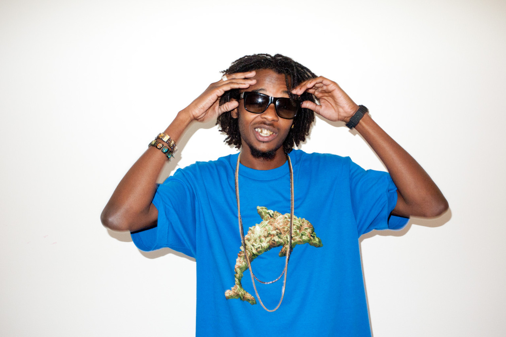
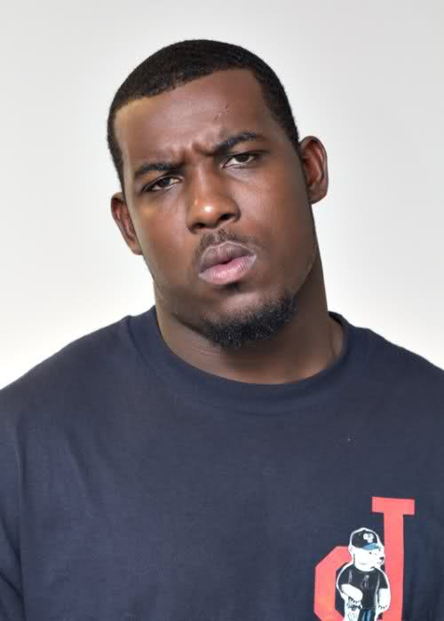

Tyler.
the Creator
The leader and one of the main founders of Odd Future, Tyler. the Creator, was a key part of the OF lifestyle and sound. He was also the star of the Odd Future comedy show Loiter Squad which aired on Comedy Central for a few years. Since his Odd Future days, Tyler has released five studio albums, with his most previous one winning an Oscar. He is one of the most iconic hip-hop artist in the game today.
Frank Ocean
Mainly known as a mesmorizing singer (as opposed to a rapper like most of his Odd Future peers) Frank Ocean was a vital part to the success of the group. He commonly did the hooks and choruses of some of the groups most sucessful songs. Frank was the glue of the group and their quest for freedom against society.
Earl Sweat
shirt

Earl joined Odd Future when he was just sixteen years old. He was taken in by Tyler whom he viewed as an older brother type. Earl is known for his quick monotone flow that was a signature of the Odd Future sound. Earl had a dark side of him that bled into the Odd Future sound. Since his OF days, he has since released four albums with his most critically acclaimed being "I don't like shit, I don't go outside."
Syd
tha Kid
The DJ and main engineer of the group, Syd tha Kid (now known as simply "Syd") was also the only female of the group. Still just like every other odd ball in the group, she fit in perfectly. After the Odd Future split, she stated her own group called The Internet with fellow OF member, Matt Martians. Her new group is quite sucessful in their own right with her as the lead vocalist.
Jasper Dolphin
Jasper Dolphin is the outright goofball of the group and joined shortly after they had founded. He was not heavily involved in Odd Future's music as he only appeared in some of their tracks as a quick feature. Instead, Jasper was more vital to Odd Future's Adult Swim show Loiter Squad as he starred in the low-budget sketches along Tyler. the Creator and Lionel Boyce. He currently has his own shown on Viceland, Jasper & Errol's First Time
Hodgy Beats
An original member of Odd Future, Hodgy was the first member of Odd Future to release his own solo record The Dena Tape in 2009. He is one half of Off Future subgroup, MellowHype, (with Left Brain) and one third of MellowHigh (with Hodgy Beats and Domo Genesis)
Left Brain
One of the main producers of Odd Future, Left Brain was crucial to the signature sound of OF. He has produced many songs for Odd Future, including for The Odd Future Tape & The OF Tape Vol. 2. He has also rapped on tracks such as "Oldie", "Real B***h", "Swag Me Out", and also did the hook for " Trashwang". He is one half of MellowHype (with Hodgy Beats) and one third of MellowHigh (with Hodgy Beats and Domo Genesis)
Domo Genesis
Domo Genesis joined Odd Future in mid-2009 because he was very good friends with Tyler, The Creator. His debut mixtape, Rolling Papers, was released on August 30, 2010. Production was done entirely by Tyler, The Creator, Left Brain, and Syd tha Kyd. His first full LP, Genesis dropped in 2016 with impressive features from Mac Miller, Juicy J, Wiz Khalifa, and of course Tyler. The Creator. He is one third of MellowHigh (with Hodgy Beats and Left Brain)
Mike G
The final main rapper of Odd Future, Mike G was a late addition to Odd Future. He made some noise after delivering a top-notch verse on Odd Furture's most popular track "Oldie" and later on dropped has dropped four projects since the OF split, one as recently as last year.
Lionel Boyce
Similar to Jasper, Lionel was unessential to Odd Future's music. Instead, he was more of a hype man for the group. However, he was important member of OF as a fellow star of Loiter Squad.